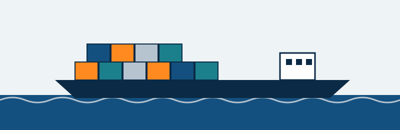
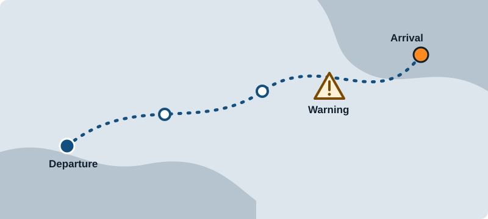

Ocean freight tracking

Ocean freight cargo tracking means following a shipment as it moves from the sender to the receiver by sea, so everyone can see where it is and when it is likely to arrive.
The main pieces
- Containers: standardised steel boxes that hold the goods. Each one has an identification code, so it can be followed from place to place.
- Vessels: the ships that carry containers between ports. A single vessel carries containers for many different customers.
- Ports and terminals: where containers are loaded onto ships, unloaded, and moved on by truck or rail.
Status events
Tracking is built from status events, short records that say something happened to a container. A typical journey includes events such as:
- Container picked up or gated in at the origin.
- Loaded on a vessel.
- Vessel departed.
- At sea, with an estimated time of arrival (ETA).
- Vessel arrived and container unloaded at the destination port.
- Released, delivered and returned empty.
Each event normally carries a time and a location, and the sequence shows how the journey is going.
Sensors and position
Besides status events, a container can carry a data logger or tracker. Common readings are:
- GPS position: latitude and longitude in decimal degrees, showing where the container is, usually reported at intervals.
- Temperature: important for temperature-controlled (reefer) cargo such as food or medicine.
- Humidity: relative humidity inside the container. High humidity can cause condensation, which can damage goods such as paper, electronics and some food.
- Shock: impacts measured in g, which can reveal rough handling or a drop.
Limits for each reading depend on the cargo and the shipper, so the dashboard uses made-up demo limits only.
Why tracking helps

- Planning: receivers can prepare for arrival, such as transport and storage.
- Early warning: a late or missing event shows that something may be delayed.
- Fewer enquiries: customers can check status themselves.
- Records: the event history documents what happened and when.
See it in action
The demo dashboard shows how a tracking view might look. Its readings are simulated in your browser and are not real shipments.